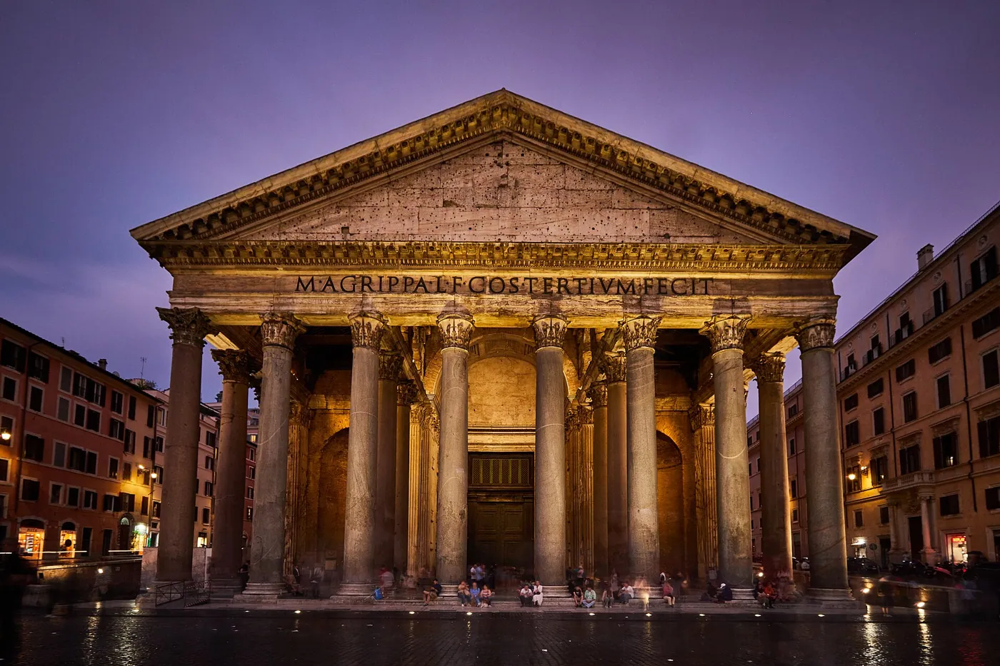
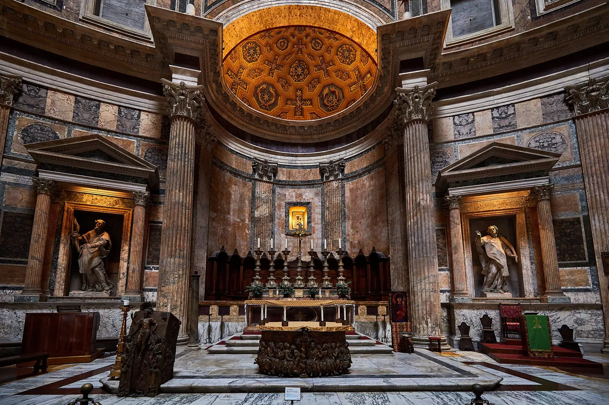
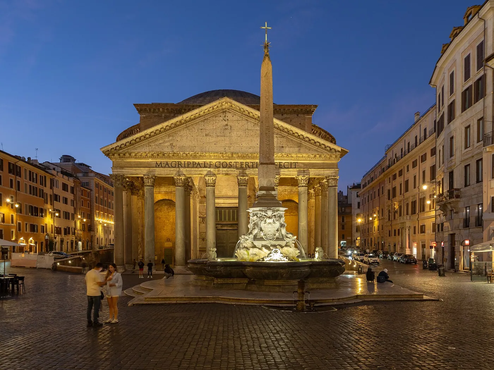
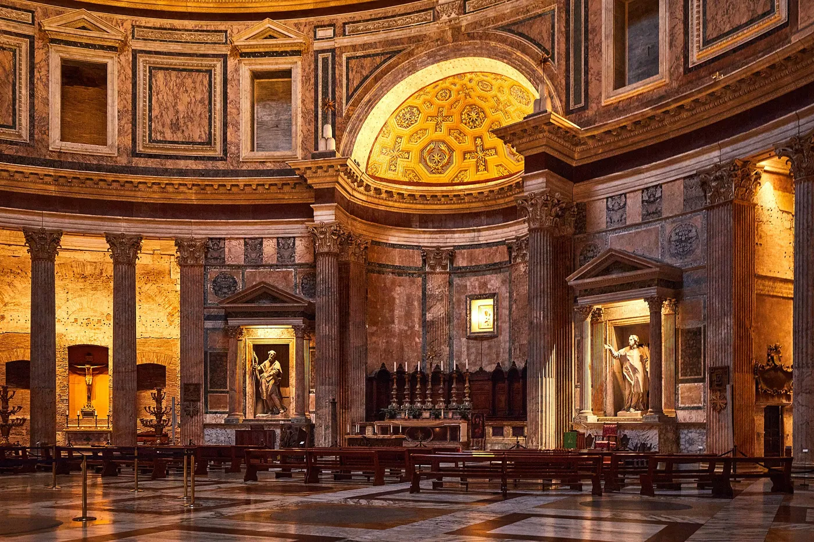
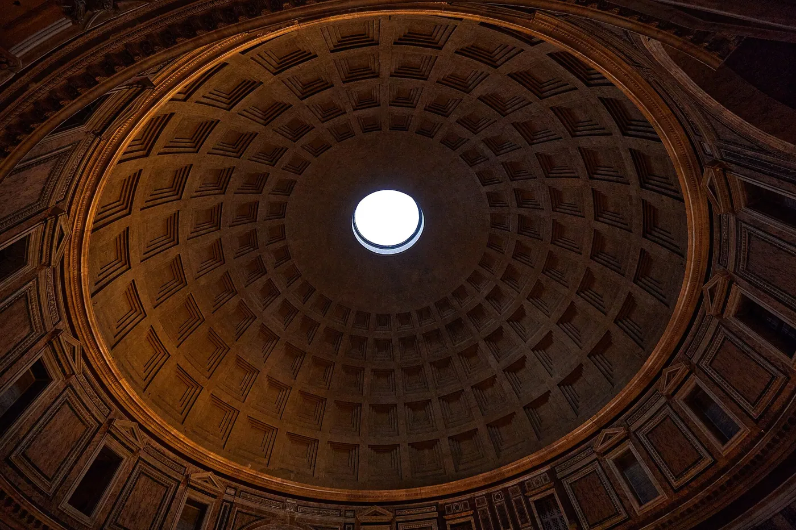
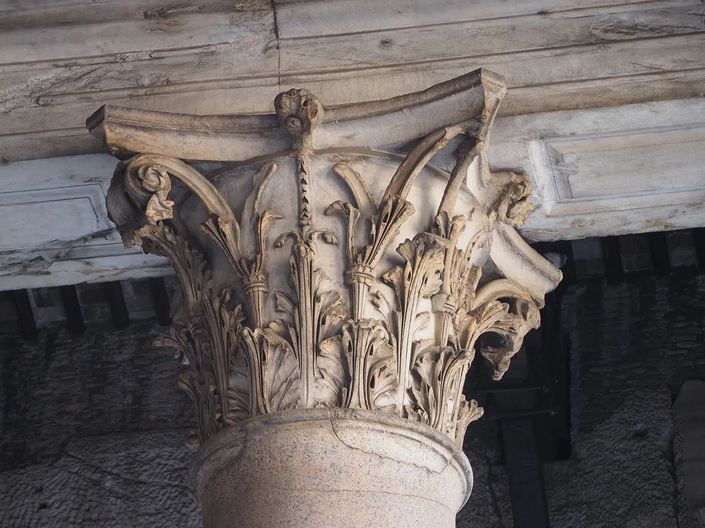
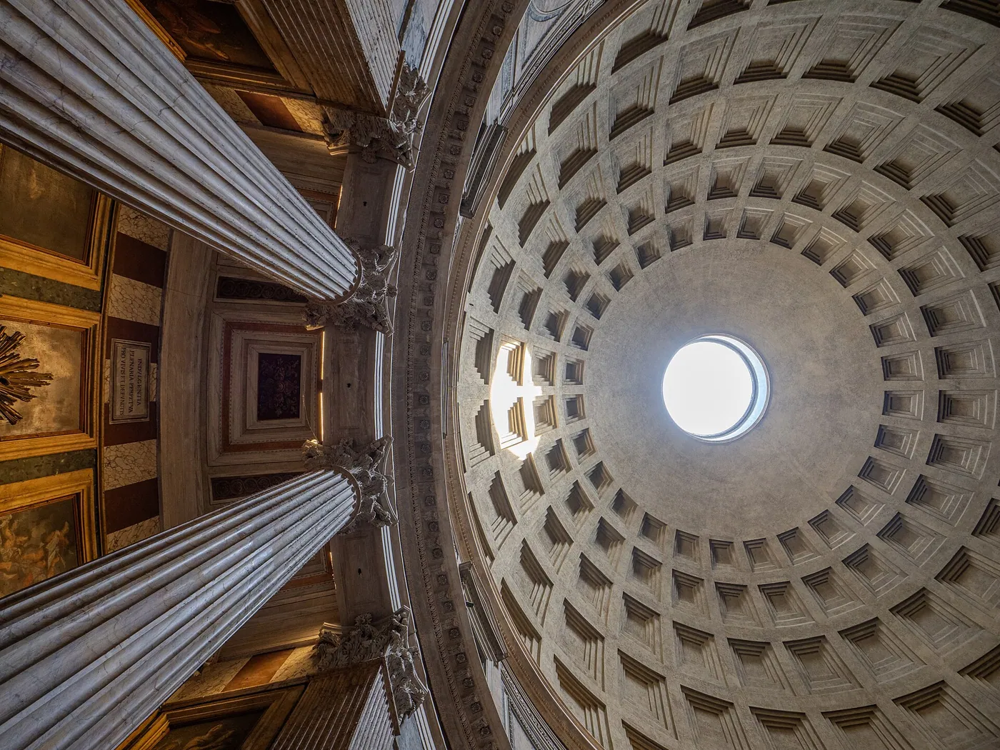

1/8 · ExteriorPhoto: Thomas_Fuhrmann_Jakobsthal · CC BY-SA 4.0 · source
2/8 · Exterior · Portico of the Pantheon in RomePhoto: Nhartmannphotos · CC BY-SA 4.0 · source
3/8 · Context · Pantheon This picture was uploaded via web-app "Wiki Loves Monuments Italia" Photo: C messier · CC BY-SA 4.0 · source
4/8 · InteriorPhoto: Thomas_Fuhrmann_Jakobsthal · CC BY-SA 4.0 · source5/8 · InteriorPhoto: Thomas_Fuhrmann_Jakobsthal · CC BY-SA 4.0 · source
6/8 · InteriorPhoto: Thomas_Fuhrmann_Jakobsthal · CC BY-SA 4.0 · source
7/8 · Detail · Pantheon This picture was uploaded via web-app "Wiki Loves Monuments Italia" Photo: C messier · CC BY-SA 4.0 · source
8/8 · Interior · Pantheon This picture was uploaded via web-app "Wiki Loves Monuments Italia" Photo: C messier · CC BY-SA 4.0 · source096/100 · Religious · Historic precedent
Pantheon
Hadrian (attrib.) · Rome, Italy · 125
Study it forA concrete dome as wide as it is high, lit only by the oculus.
- Architect
- Hadrian (attrib.)
- Place
- Rome, Italy
- Year
- 125
- Typology
- Religious
- Movement
- Historic precedent
- Region
- Europe
See it on the wall